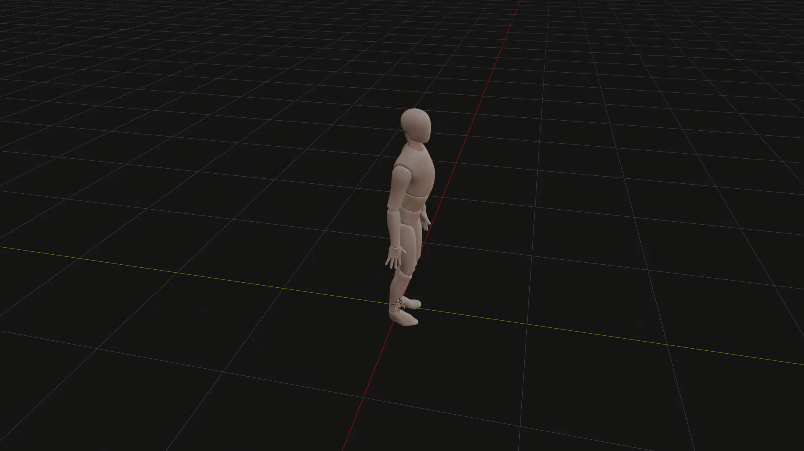
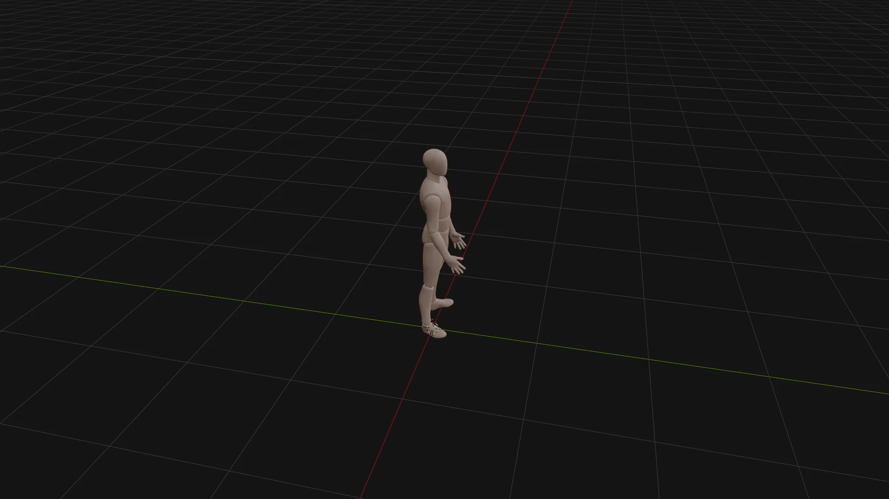
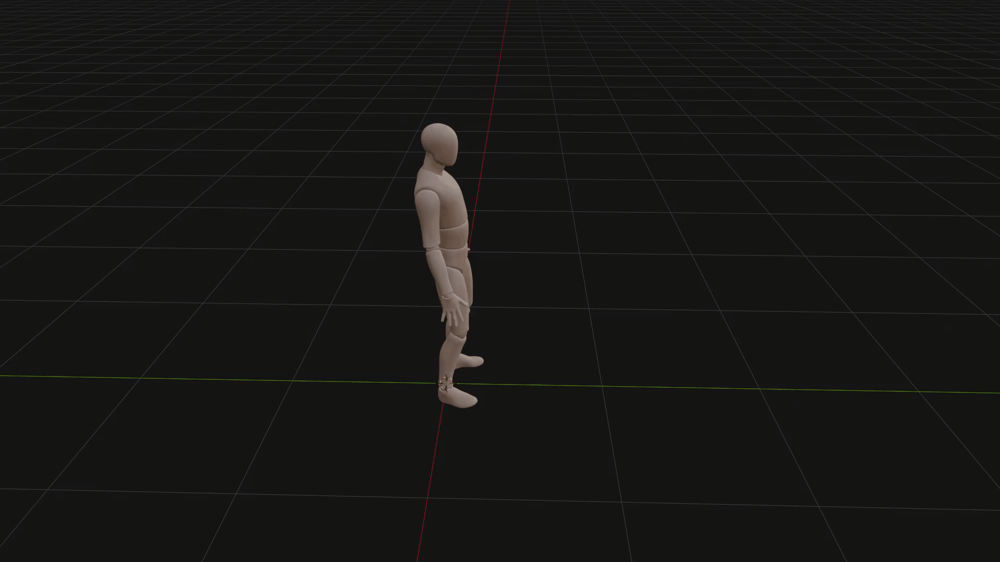
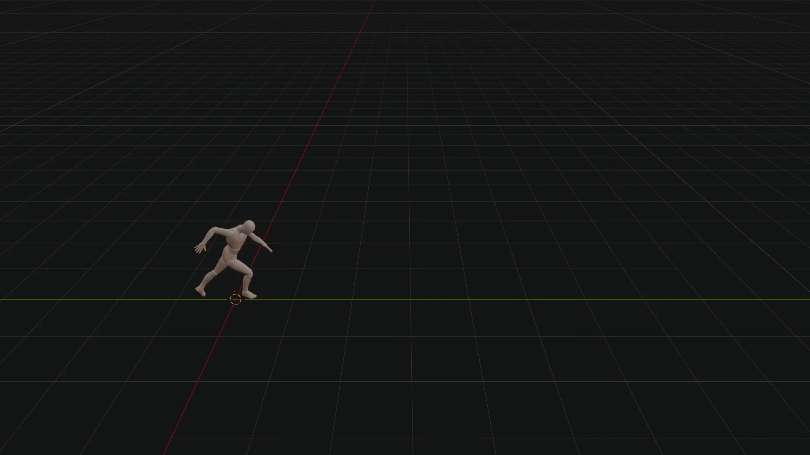
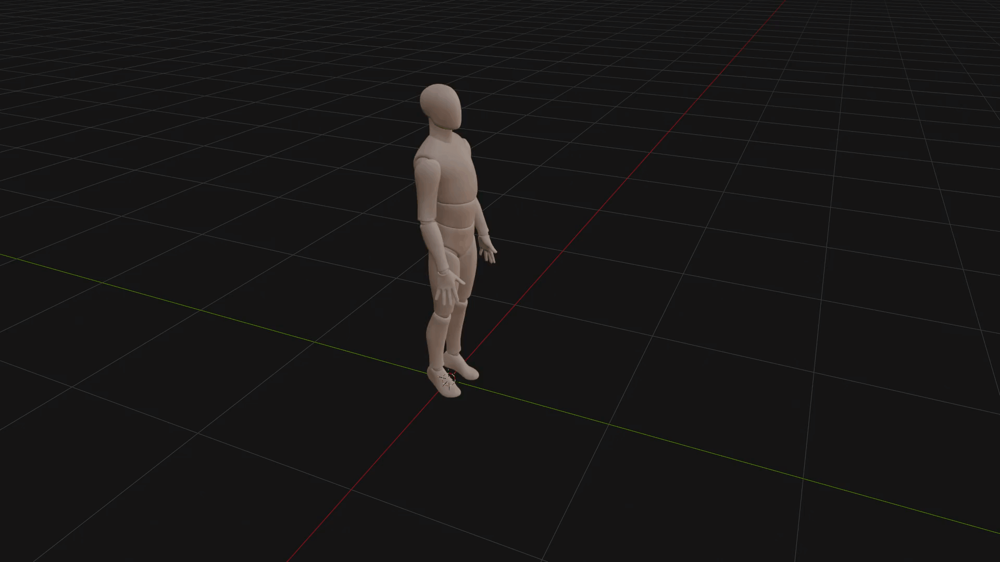
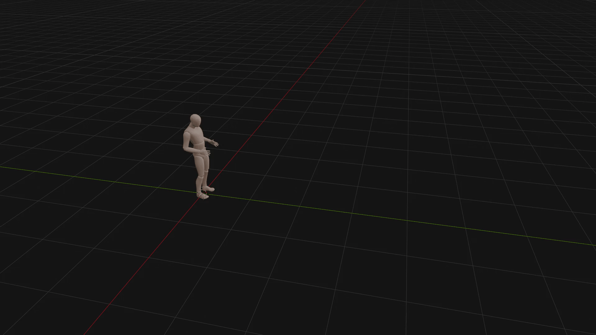
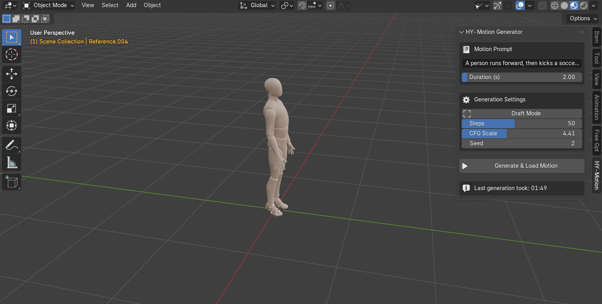
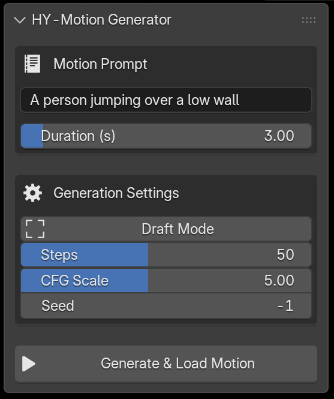

Motion Gen
Type a sentence, get a full 3D character animation. Motion Gen bridges natural language and physics-based motion synthesis directly inside Blender — no mocap studio, no keyframing, no pipeline juggling.
What is Motion Gen?
Motion Gen is a Blender addon that lets you generate realistic 3D humanoid animations from plain-English text prompts. Under the hood it orchestrates a multi-model AI pipeline: a large language model (Qwen 3-8B) interprets your prompt and translates it into a structured motion description, a CLIP vision-language encoder aligns the semantics, and a 1-billion-parameter diffusion network synthesises the actual joint rotations and root translations frame-by-frame.
The result is automatically mapped onto a built-in SMPL-X character armature and imported into your Blender scene — ready to render, retarget, or refine. The entire process runs locally on your machine; no cloud API, no subscription, no internet required after initial setup.
What You Get
A complete prompt-to-animation pipeline, entirely offline and deeply integrated into Blender.
Prompt-to-Motion
Describe any human motion in natural language — from "a person casually walking" to "a martial arts spinning kick" — and watch it materialise as keyframed animation data.
Isolated ML Runtime
A fully standalone Python 3.11 environment lives inside the addon folder. Zero conflicts with Blender's built-in Python — install once, forget forever.
Auto-Rigging & Import
Generated motion is automatically applied to a bundled SMPL-X armature model. The character appears in your scene with all keyframes baked and ready.
Fine-Grained Controls
Tune inference steps, CFG scale, seed, and duration. Use Draft Mode (20 steps) for rapid iteration, then switch to Production (50-60 steps) for final quality.
GPU + CPU Fallback
Optimised for NVIDIA GPUs with CUDA, but includes a "Force CPU" toggle for AMD, Intel, and Apple Silicon users — or anyone without a dedicated GPU.
Fully Offline
After initial model download, everything runs locally. Your prompts and generated data never leave your machine.
Generated Animations
Every animation below was generated entirely from a text prompt — no keyframing, no mocap data.

A person jumping
Picking a heavy object
Picking a small object
Running & kicking
Sitting down
Slow running💻 System Requirements
General Software & Storage
- OS Windows 10 or 11 (64-bit) for the automated 1-click installer. Mac and Linux are supported but require manual terminal setup.
- Host Software Blender 3.0 or higher.
- Storage 15 GB – 20 GB of free space (SSD highly recommended).
- Internet Required for the first run to download the AI models and Python environment.
With Dedicated GPU
Uses dual-hardware architecture: System RAM for text translation, GPU for 3D physics rendering.
- GPUNVIDIA GPU strictly required.
- Min VRAM8 GB (e.g. RTX 2060 Super, RTX 2080, RTX 3060).
- RAM16 GB minimum (32 GB recommended). With 16 GB, close heavy background apps before generating.
- CPUModern multi-core (Intel i5 / AMD Ryzen 5 or better).
- Render Time~15 seconds for a standard animation.
No GPU / Mac / AMD
Enable the Force CPU toggle. Entire multi-model pipeline runs in System RAM.
- GPUNone required.
- RAM32 GB absolute minimum (64 GB highly recommended).
- CPUHigh-end modern processor strongly recommended.
Getting Started
Three steps: install the Blender addon, set up the backend, then import the AI model weights.
Install the Addon in Blender
- Download the
motion_gen.zipfile (do not extract it). - Open Blender (version 4.2.0 or higher recommended).
- Go to Edit → Preferences → Add-ons.
- Click Install… at the top right.
- Locate and select
motion_gen.zip, then click Install Add-on. - Enable the addon by checking the box next to Animation: Motion Gen.

Install the Motion Gen Backend
- Once enabled, expand the addon details by clicking the arrow next to its name.
- In the Local Setup section, you will see the status of the Python runtime environment.
- Click Install Python Runtime (or Install Motion Gen Backend). This will configure a standalone Python instance just for the addon.
- Wait for the installation to finish. You can check the Blender system console (Window → Toggle System Console) for progress.
- Wait until the status says Runtime and Dependencies Installed!

Download & Import AI Models
Due to their large size, the AI models must be downloaded separately.
- In the addon preferences under AI Model Paths, click the provided links to download:
- Use the file selectors in the addon preferences to point to the downloaded files.
- Click Import Selected Models. The addon will copy these files to the correct internal directories.
- When finished, it will display All required models found locally!

N to open the Sidebar, go to the Motion Gen tab, type a prompt, and click Generate & Load Motion.
Understanding the Panel
Every control in the Motion Gen sidebar panel explained — from prompt input to the final generate button.
Motion Prompt
Describe the animation in plain English. Focus on concrete physical actions. Keep under 60 words.
Duration (s)
Animation length in seconds. Longer = more frames but slower generation. Caps at 12s (360 frames).
Draft Mode
Locks steps to 20 for fast rough previews. Turn off for final quality.
Steps
Diffusion iterations. More = smoother physics. 20–30 for drafts, 50–60 for production.
CFG Scale
Prompt adherence vs. physics. Low (2–4) = natural flow. High (5–7) = strict prompt. Above 8 may jitter.
Seed
Set -1 for random variation each time. Use a fixed number to reproduce a specific result.
Generate & Load Motion
Runs the full pipeline — encodes your prompt, generates motion via diffusion, and imports a rigged character with the baked animation. Shows elapsed time and live status during generation.

The Motion Gen panel lives in the 3D Viewport sidebar. Press N to toggle it.
Prompting Guide & Best Practices
Getting great results starts with writing great prompts. Follow these guidelines to get the most out of Motion Gen's text-to-motion pipeline.
Language & Length
Please use English. For optimal results, keep your prompt under 60 words.
Content Focus
Focus on action descriptions or detailed movements of the limbs and torso. Concrete physical actions produce the best results.
Current Limitations NOT Supported
Animations for animals or non-human creatures.
Descriptions of complex emotions, clothing, or physical appearance.
Descriptions of objects, scenes, or camera angles.
Motions involving two or more people.
Seamless loop or in-place animations.
✨ Example Prompts
A person performs a squat, then pushes a barbell overhead using the power from standing up.
A person climbs upward, moving up the slope.
A person stands up from the chair, then stretches their arms.
A person walks unsteadily, then slowly sits down.
Known Limitations
Motion Gen is powerful, but understanding its boundaries will help you get the best results.
Currently supports a single built-in SMPL-X character template. Custom character retargeting is not yet available. The addon requires a standalone Python 3.11 runtime (~3 GB) in addition to the model weights.
The diffusion model generates humanoid motion only — no quadrupeds, no multi-character interaction, no finger/facial animation. Very long prompts or unusual descriptions may produce unpredictable results. Physics accuracy degrades past ~10 seconds of continuous motion.
NVIDIA GPUs with at least 8 GB VRAM are required for real-time generation. CPU-only execution works but is 40–60× slower. AMD and Intel GPUs are not directly supported for accelerated inference.
Results are highly dependent on prompt wording. Simple, descriptive sentences work best. The model responds better to concrete actions ("a person jumps over a box") than abstract concepts ("feeling happy").
The automated 1-click installer only works on Windows 10/11 (64-bit). macOS and Linux users must manually set up the Python environment via terminal.
Using a fixed seed produces consistent results on the same hardware. Different GPU architectures or CPU vs GPU may yield slightly different outputs for the same seed.
Changelog
| Version | Date | Highlights |
|---|---|---|
v1.0 |
April 2026 | Initial release — prompt-to-motion generation, SMPL-X auto-rigging, GPU + CPU fallback, manual model import, isolated Python 3.11 runtime, Draft & Production quality modes. |
Model & Dependency Licenses
Motion Gen bundles or depends on several open-source / open-weight models. Please review the respective licenses before commercial use.